生产完整经验
学生真实执行，保留动作、后果、反馈、失败和恢复；配方选择器决定采什么任务、分配多少交互。
所有臂共用信息与标签接口机器人在部署中得到的失败与专家纠正，如何进入下一代策略，使它在新部署中更少依赖专家，并更有效地利用自身交互反馈？
主实验转向 RoboDojo 与 RoboMME，分别检验纠正吸收与历史依赖操作；LIBERO 基线和训练接口验证保留为参考。部署中的记忆利用与部署后的权重吸收分开测量。历史 Cooking、信用与 Alchemy 负结果保留；多代闭环与机器人学习收益尚未验证。
查看原实验室重建、四瓶完整演示和阶段恢复审计 → Cooking 是独立学习诊断；已有机器人场景继续保留，不被网格环境替代。
下列规模属于历史符号开发诊断，不是机器人方法结果。
先复现标准机器人基线，再检验经验如何被吸收。 同一学习器与预算比较额外 BC/SFT、学生状态 OPD、恢复纠正和历史条件纠正；报告绝对成功率、专家控制比例、完整交互成本及旧技能保持。组合这些组件本身不是新颖性证明。
官方源代码和全任务元数据已核对；一轮纠正 BC 的首个种子出现负结果（见下表）。拟议新机制与完整六种子结论尚未生成。
| 任务 | 原始模型 | 吸收后 seed 7 | 百分点变化 |
|---|---|---|---|
| PatternLock | 32/50 · 64% | 14/50 · 28% | −36 |
| PickHighlight | 10/50 · 20% | 0/50 · 0% | −20 |
| 合计 | 42/100 · 42% | 14/100 · 14% | −28 |
按官方案例编号配对：失败→成功 2 例，成功→失败 30 例。两种方向的清单全部保留。原先完成的 87 例未重跑；只补齐 13 例，本次新增基础设施中止为 0。
这是同预算历史跨度试验中的一次 student-state BC/DAgger 吸收，不能据此声称新算法、多代 RSI 或学习新规则。跨进程逐位轨迹复现尚未成立，逐例翻转不解释为完全相同像素初态的确定性反事实。source 侧纯 CPU 审计通过：240 份实际训练文件的动作与当前状态变换均匹配原生规范。120 个训练样本在原采集时均为非终局的20步专家片段，不能称为120条成功恢复轨迹；后续4个预登记source状态的专家延续诊断见下方，原片段和全部成败不变。片段质量、闭环覆盖与遗忘仍需开发集检验；不在 val 上反复调参，后续种子不按结果筛选。
| 任务 | 原始模型（recent） | 吸收后seed7（recent） | 百分点变化 |
|---|---|---|---|
| PatternLock | 9/50 · 18% | 6/50 · 12% | −6 |
| PickHighlight | 3/50 · 6% | 0/50 · 0% | −6 |
| 合计 | 12/100 · 12% | 6/100 · 6% | −6 |
100例已完整归档并独立核验：失败→成功1例、成功→失败7例；全部任务失败与预算未成功保留，新增基础设施中止为0。此臂与自己的12%初始基线比较，不使用full臂的42%。两种历史跨度的seed7均为负结果，但六种子主结论仍未生成；demo保留差异与跨进程渲染限制继续保留，不能据此解释自我反馈机制或新规则学习。逐例配对、模型与核验身份 →
19个预登记attempt全部结束、三批原件已封存到NAS，owned worker/service已退出；source16及最后N/Q/H原件、成本和读数均已独立审核通过。固定released策略在PL/PH train17–24的source表现为PL7/8、PH8/8，唯一失败PL23（123步）。保持原生最多32帧历史、20预测/16执行和1300总控制预算。这不是训练后增益，也不与旧development16合并。
| 唯一slot：PL23 / anchor48 | 终局 | 任务控制（含前缀） |
|---|---|---|
| N：fresh无帮助接续 | 未成功 | 122＝48前缀＋74学生 |
| Q：采集原生专家20步 | 20步完整、非终局 | 68＝48前缀＋20新专家 |
| H：重放20步帮助后学生接续 | 未成功 | 150＝48前缀＋20记录帮助＋82学生 |
登记漏斗：16source→1合格失败→1固定slot→1有效N/H配对→0rescue。按事前规则停止本panel机制升级，不加帮助长度、换seed或追加训练。合法20步没有在这个状态上带来学生终局成功；原因仍UNKNOWN。单个条件配对不证明普遍恢复不可能，也不解释旧吸收实验为什么退化。
实际总成本：4030个任务控制（含144前缀重放、20新专家＋20帮助重放、3846学生），另有38次native reset、3445次setup控制、约892.81秒setup；249学生预测＋39服务资格预测。墙钟约67.59分钟，两GPU预留时长相加约2.25device小时，不是活跃利用率/FLOPs；物理子步UNKNOWN。0更新、0development rollout、0重跑或替补。所有失败保留，未把合法标签称为verified recovery。
最后运行核验：2026-10-18T08:33:47Z；最终独审：2026-10-18T08:40:43Z。完整读数、精确身份和审核阶段 → · 执行PR24（未合并）→。网页事实PR仍open、未合并、未发布；既有负结果与4/4对4/4均保留。
2026-10-18 10:26:43Z：两例 NOT_RUN，0 更新。 已为新 manifest 的 PatternLock / PickHighlight source index0 接入严格 metadata 解析、真实 live model-ready 输入捕获、实际动作来源账本与完整20步目标筛选。21项CPU合同和精确执行包独审通过，只是运行前准入。
唯一启动命令发生45秒SSH超时。当时的只读核对未见启动回执、协调器日志/状态；其进程检索只覆盖协调器路径，并过滤掉部分 python3-c/bash-c 外层 launcher，因此未完整覆盖这些进程，不能据此证明全局无进程；按预登记包含基础设施中止的 no-retry 条款停止，没有重复启动或替换案例。没有确认的环境启动或native收据，也没有输入张量或可用chunk资格结果；这不是任务失败，也不是方法效果证据。记录为未启动的成本不代表测量到GPU/物理成本为零。
BC、pooled BC、IWR-style已补数值配方草案，仍未登记完整效能实验、未授权训练。既有负结果、19次NO_GO与主队列dated458 infra-blocked保持。时间、模型/计划/代码身份与成本边界 → · 集成PR26（open，未合并）→。本网页事实PR仍open、未合并、未发布。
2026-10-18 12:11Z：2例原件独审通过，168 task controls，0 更新。 新 lineage 中的 PatternLock / PickHighlight source index0 各执行64 student + 20 expert controls。两例都在84步集成预算停止，未到官方终局；不是任务成功率或帮助效果实验。保存原件显示每例0/52为 D_R、32为 D_I，共6个完整20步实际目标；16混来源、68不足20被拒绝，原历史和预测尾部仍保留。6组 live-ready 与 dry-training 输入共66个保存字段逐字节相同；独立复核了275帧H5、实际命令、目标归一化、归档和退出顺序。该结论只覆盖这两例输入与目标资格，不是完整训练管线或物理tracking证明。
总计2 queries、40额外专家 controls、10 task forecasts（含2次不执行的shadow）+13资格 forecasts；setup另计257 controls、4 resets、68.73秒，owned运行455.63秒、预留0.25313 device-hours。0 backward/optimizer，0 development/final rollout；内部encoder调用与physics substeps未计量，标UNKNOWN。worker排空后封存，再退出owned服务并持久化归档。没有开启剩余194例或训练。
旧 v4 的45秒超时和 no-retry 结案原样保留，原因仍UNKNOWN；本轮只退役旧远端 operational 配置。两个无模型canary各启动一次child，抑制ACK后同ID重投未重复启动；主机阶段4次传输、6.508秒。日期、身份、成本和核验边界 → · PR27（open，未合并）→。既有负结果、source19 NO_GO、main1400 dated458 infra-blocked保留。网页PR仍open、未合并、未发布。
2026-10-18 13:30Z：本资格包未通过，已关闭，不重试。 新入口让 BC、pooled BC、IWR-style 复用同一原生训练器与 batch2/FSDP 接口，仅改变固定索引。21 项针对性 CPU 合同及执行包审核通过后，BC 在两台已登记 GPU 上完成一次初始化，随后身份断言失败；pooled / IWR 均未运行。尚未进入真实训练张量核对、loss/backward、AdamW/EMA 更新或导出。
本包登记沿用了 f141… 的 bf16-bit 指纹，却没有单独绑定要求的 1a5d72… serving 身份域；同时失败前未保存两个实际摘要，无法判定是哪项比较失败。不同身份域不能直接替换字符串。61 叶的 dtype/shape/SHA 记录已保留，但不是独立全树重算。这是工程资格与登记问题，不能解释旧模型退化，也不是新的方法负结果。
实际成本：1 次初始化、0 train-step、0 optimizer 更新、0 新环境/专家/rollout；初始化 105.42 秒、native owned 179.28 秒、预留 0.09960 device-hours。两设备 JAX allocator 峰值均约 35.28 GiB，仅是初始化分配器观测，不是训练内存或整卡峰值。22 份原件在子进程退出后归档到 NAS，独立复核其文件 SHA、ledger、持久 claim、退出身份和 lease 释放；这是失败证据核验通过，训练资格仍未通过。后续效能 pilot 数值草案仍 PROPOSED / NOT_RUN，未授权 source62、development32 或 1000 步训练。
精确身份、失败边界与成本 → · 共同 learner PR28（open、未合并）→。此前两例输入/目标资格、全部负结果、source19 NO_GO 和主队列 dated458 infra-blocked 保留；最后独立核验：2026-10-18T13:37:50Z。本网页事实 PR 仍 open、未合并、未发布。
PROPOSED / 效能实验 NOT_RUN。 两例集成资格另列于上。新增 episode manifest、write-once 原生 metadata 和严格解析 preflight。每任务预描述 source32（16/8/8）、development16（8/4/4）、final-reserved50（26/12/12），共196条描述；不是196次rollout，也没有新增训练。固定 sha256-v1 / master seed20261018 规则在生成前写入代码文档，独立目录重建逐字节相同。
排除范围是固定上游revision的6份官方train/val/test metadata：400条记录、332个不同seed。生成196个不同seed与该有界集合不相交；这不认证released基座或上游fine-tuning未见这些场景。缺失/默认metadata解析会在环境构建前被拒绝；55项CPU合同和fake resolver覆盖不能代替真实native集成或任务成功率。
上述 UNSET 是当时设计阶段的记录；最新共同 learner 与数值 pilot 草案另列于上，native learner 资格尚未通过，效能执行仍未授权。manifest 明确 execution_authorized=false。既有source19次NO_GO、所有吸收负结果、main1400的dated458 infra-blocked和reference800均不变。实现PR25（open，未合并）→ · 采样规则、复用边界与UNSET清单 → · 原型身份与CPU范围 →。描述核验时间2026-10-18T09:40:04Z；网页PR仍open、未合并、未发布。
| 新development实例 | 初始released | 原纠正BC | 保护动作专家BC |
|---|---|---|---|
| PatternLock | 7/8 | 2/8 | 7/8 |
| PickHighlight | 8/8 | 0/8 | 0/8 |
| 合计 | 15/16 | 2/16 | 7/16 |
按case ID配对：相对released修好1例、损失9例，−50个百分点；相对原纠正模型修好5例、损失0例，＋31.25个百分点。保护基线恢复了部分PatternLock表现，但PickHighlight仍为0/8，整体未超过初始模型。单种子开发结果不作为确认性主效应；三个模型均从第0步自主控制，使用相同16个官方train9–16实例，这只表示本项目此前未用于受管开发运行，不声称未见于预训练。逐像素反事实复现未成立。
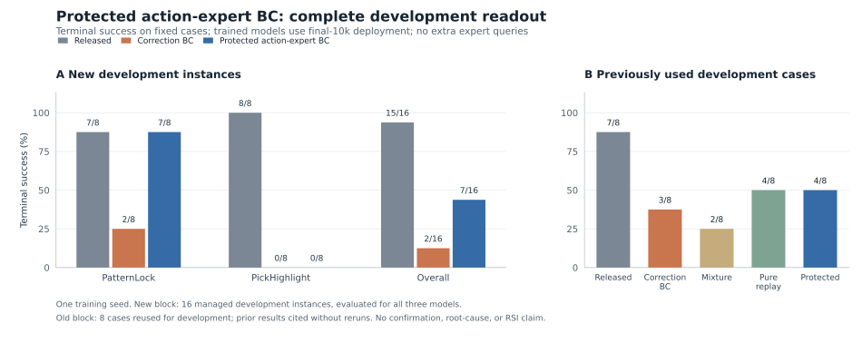
全部56次预登记rollout已封存并经独立逐例复核。新16例为15/16→7/16；原纠正BC为2/16。保护基线恢复部分性能，整体仍低于released。网页事实PR仍未合并、未发布。逐例、成本及精确身份 →
原120条纠正输入、released初始化、seed7、10,000次更新及原生输入/精度路径保持不变。19个已有动作专家/投影参数叶可更新，42个视觉、语言和历史参数叶受保护；首步、最终原生权重和部署bf16中，受保护参数均与初始化逐字节一致。最终部署是预登记的19个动作EMA叶＋42个受保护live叶；原生全树EMA的舍入变化单独披露，未直接部署。这是“19叶优化边界＋protected live/action EMA导出”的组合配方，不是只改变mask的单因素实验，不能单独归因于冻结。19叶仍包含430,098,464个参数，不称轻量或预算优势。首步raw EMA中18个受保护native叶、11个inference叶变化只是本运行的数值事实，不能反推旧full-correction退化由EMA造成；旧full本来就在更新这些语言/历史参数。这些规则均在本候选更新之前登记，不是事后修补，也不是新颖机制。
旧8例仅给新候选各跑一次：初始7/8、纠正3/8、混合2/8、纯回放4/8、保护4/8；旧四版本引用原件未重跑。新候选旧8例为PatternLock4/4、PickHighlight0/4，source2/4、development2/4。这些旧例已用于开发，不并入新16例主读数。
2026-10-18T04:57:21.925406+00:00的执行记录显示全部56次rollout结束；本地NAS原件、2,131个关联产物、2,019个20×8预测程序及7批worker排空→归档→服务退出顺序已在后续独立核验中复核。新增1个模型、10,000次实际更新、31,823个控制步、0新增专家查询；91次服务资格预测另列。两GPU预留时长相加约7.54 GPU小时，流水线墙钟约3.77小时；不是实测活跃GPU利用率或FLOPs；reset内部步数等未测开销不写成0。此前零更新预检中止、归档读取超时、旧partial和所有负结果保留。最后核验：2026-10-18T05:05:28.723652+00:00。网页PR仍open、未合并、未发布。
根因仍UNKNOWN。只读动作合同审计未发现已核对活动关节/PH夹爪的动作空间或时基错位；PL物理上忽略的第8通道标签约定不同、PH夹爪裁剪映射单列，不据此归因。旧cache/live逐字节比较FAILED保留，合法数值profile没有被包装成输入修复。原六种子1400例与独立800例reference保持分离，不以这56例替代。 主队列最新已核验覆盖指针为FINAL_HANDOFF.json/STATE.md中的458/1400、独立infra阻塞；MAIN_QUEUE_BLOCKER.md和main-queue-current-incident.json的457是00:56–01:04历史快照，保留而非覆盖。最新健康读取仍是05:09Z的GPU1五秒超时，不宣称恢复运行。全部56例、配对翻转、成本和来源身份 → · 代码PR21（未合并）→
| 原固定源前缀 | released无帮助 | released＋原20步帮助 |
|---|---|---|
| PatternLock-train-001 | 成功 · 58步 | 成功 · 59步（含20步帮助） |
| PickHighlight-train-001 | 成功 · 213步 | 成功 · 203步（含20步帮助） |
| PatternLock-train-002 | 成功 · 125步 | 成功 · 125步（含20步帮助） |
| PickHighlight-train-002 | 成功 · 449步 | 成功 · 508步（含20步帮助） |
终局成功：无帮助4/4，原20步帮助4/4。无帮助臂已在这4个固定前缀上达到4/4天花板；本对照没有观察到终局成功率增益，不能据此判断帮助在其他状态普遍无效。 全部8例已结束、封存，并独立核对实际H5逐帧数据、原前缀、动作程序、执行控制和终局；不是CPU夹具的通过结论。
这项对照保持released权重固定，没有新增训练或专家查询。共1740个实际控制步：源前缀重放800、记录专家帮助80、学生860；学生预测58次，服务资格预测13次另列。原20步帮助仍计入成本，不能将“0新查询”写成“0帮助”。reset内部成本UNKNOWN。
本实验回答同一个冻结学生在四个原C前缀后的条件性接续表现，不估计训练后的吸收收益。帮助同时改变物理状态和公开信息，不能单独归因为信息获取、ICL或新规则学习。两臂均在接管时fresh policy/RNG、保留原demo边界及native最多32帧历史；没有证明完整隐藏仿真状态相同，不称精确物理反事实。原source失败和本次新接续成功可以同时存在。旧trained C2/4仅作历史参照，不作本轮训练效应对照。
之前新16例released15/16、原纠正2/16、保护7/16及旧8例7/3/2/4/4、正式单seed42→14和12→6均保留，未重跑。本次没有把即时帮助成功当成纠正吸收或RSI有效。原1400例458 durable的基础设施阻塞快照与独立800例reference保持分离。逐例、成本、模型和精确身份 → · 代码PR22（未合并）→
最后独立核验：2026-10-18T06:08:56.230602+00:00。网页事实PR仍open、未合并、未发布。
只复用相同71条自主成功回放，从released权重重新训练一个seed7模型，均匀有放回抽样1万次，不加入oracle纠正；原网络、优化器、特征与dtype路径保持不变。不是新方法，也不是精确剂量因果对照。
| 固定source/dev任务 | 初始模型 | 纠正-only | 混合回放 | 纯自主回放 |
|---|---|---|---|---|
| PatternLock | 3/4 | 3/4 | 2/4 | 2/4 |
| PickHighlight | 4/4 | 0/4 | 0/4 | 2/4 |
| 合计 | 7/8 | 3/8 | 2/8 | 4/8 |
最终EMA固定8例全部完成并独立核验（观测时间2026-10-17T19:21:40.950290+00:00，核验时间2026-10-17T19:25:59.511115+00:00）；实际控制2,624步，额外专家求助0。相对初始模型0例转好、3例转差，均发生在development；source保持3/4，development从4/4降至1/4。纯回放也发生退化，说明oracle不是本设置退化的必要条件，根因仍未知。它不是正面泛化或新方法证据。逐例、terminal/budget和完整成本见数据。
初始7/8、纠正-only3/8、混合2/8均保留。纯回放若也退化，只说明oracle不是本设置退化的必要条件，不能直接判定bug；若保持原表现，也只支持设计下一项受控实验。8例已用于开发，不能证明正面泛化。计划、代码、输入资格和结果身份 → · 纯回放PR #20（未合并）→。本页改动仍在未合并的网页PR中。
已完成一个预登记的 seed7 开发试验：6条成功源轨迹产生71个真实20步动作块（PatternLock13、PickHighlight58），原120个oracle纠正张量逐字节复用。固定10,000次原生更新中，纠正与replay各占5,000次，使用最终EMA；不是完整IWR/Sirius复现。
| 固定source/dev任务 | 初始模型 | 旧纠正-only | success-replay混合 |
|---|---|---|---|
| PatternLock | 3/4 | 3/4 | 2/4 |
| PickHighlight | 4/4 | 0/4 | 0/4 |
| 合计 | 7/8 | 3/8 | 2/8 |
8例全部完成，并于2026-10-17T17:12:16.249339+00:00独立核验：2例成功、2例终局失败、4例耗尽1300步预算仍未成功；共5,506个实际控制步，无额外专家求助、无本轮基础设施中止。按case ID与旧纠正模型配对，1例转好、2例转差；与初始模型配对，0例转好、5例转差。这次配方没有改善自主成功率。
这是一个种子的4个source和4个development案例，不是官方val、独立确认集或六种子结论。原缓存/在线图像特征差异保持未修；纠正更新量减半，不能区分replay保留能力与少做纠正的影响；跨进程和物理GPU不保证逐像素反事实。所有失败保留，不以训练loss替代任务成功。全部8例、训练与计划身份 → · 原生训练PR #15（未合并）→ · 评测PR #16（未合并）→
8个预先固定source缓存输入、四个匹配模型/历史视图，共32次预测：跨历史最多32帧的关节动作MAE20为0.017319→0.004175，最近32帧为0.023486→0.004092。两种视图都只有6/8输入改善，PatternLock source1/source4变差，不是全部source行为都学好了。
独立核验的32次新鲜source/dev自主rollout已经全部闭合：每个模型8例（4 source、4 development），跨历史视图7/8→3/8，最近视图1/8→0/8，分别使用自己的初始模型。22例在官方环境终局结束，10例走完1300步预算仍未终止，后者计未成功。没有额外专家求助。A、B只在4个source实例重合，不是相同输入上的两种指标。
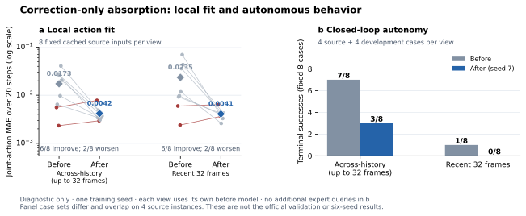
按原训练20:100任务块权重重算的MAE20分别为0.021860→0.003777、0.034584→0.003761；仍只覆盖8个缓存锚点。任务RMSE是4个实例RMSE均值，不是合并残差RMSE。它们不能解释退化原因。
4个固定source纠正状态的专家延续均已核验成功；20步记录纠正后由学生接管的四个诊断也已实际执行并独立核验。完成4/4，成功2例，不可重放0例。此前36步的SSH链路中止单独保留；其后按审核过的同机配置续跑，完整公共历史与纠正后果仍逐字节校验。没有初始学生的匹配接管臂，不能将C的可行性写成吸收增益，也不能推广到全部120片段。C的每例结果、实际成本与范围 →
退化根因仍为UNKNOWN。这些诊断未区分保留原能力、访问状态分布、短纠正片段不足与缓存/新鲜特征路径差异。demo保留仍是两视图的混淆；未据val结果调参，未声称任务内学习程序或RSI已验证。
来源补查已独立核验：这4个状态的原episode有3个最终成功、1个后来失败；query当时均未终局。PatternLock的控制步16/48来自原固定网格，PickHighlight的112/224来自后续决策覆盖补充，均不是失败检测触发。四条原20步标签的终局success均为空。这里报告的是“从学生访问状态出发的成功专家延续”，不能仅凭后续成功就把query称为失败状态或失败触发恢复。
完整学生可见前缀、原20步专家动作及可见后果均重现一致，并独立核验了实际H5数据、终局标志和官方success。以下只检验预登记source状态，未用于选择正式val参数。
| 固定source状态 | 前缀重放控制步 | 专家控制步（含原20步） | 官方终局 |
|---|---|---|---|
| PatternLock train 1 | 16 | 41 | 成功 |
| PickHighlight train 1 | 112 | 90 | 成功 |
| PatternLock train 2 | 48 | 74 | 成功 |
| PickHighlight train 2 | 224 | 158 | 成功 |
合计400步前缀重放、363步专家控制；相对于四条原20步片段，专家又执行了283步。reset内部仿真步数未计量，不能记为0。这不证明20步本身能完成恢复，也不证明学生接管或吸收有收益。仅4/120片段的成功特权后续经过检验，其余116条尚未检验。同四个状态的学生接管已实际完成并独立核验：两个PatternLock状态成功，两个PickHighlight状态耗尽1300步预算未成功。没有初始学生的匹配接管臂，不能据此认定吸收增益。此前36步链路中止、专家阶段763步和接管阶段2833步分别保留，合计3632步（reset内部步数仍未知）。PR #10仍未合并，没有修改原训练片段或重训。退化原因仍为UNKNOWN。计划、控制成本与核验身份 →
| 基准 | 对应的问题 | 官方评测与边界 |
|---|---|---|
| RoboDojo | 广泛操作、真实失败纠正、下一代自主恢复 | 成功率 + progress score；当前源有 42 个标准任务及 12 个随机布局配置，原生共 2,100 个 episode。全部资产已校验，单场景依赖发现外部纹理引用；原生场景重置与三路 RGB 已通过，14D 策略闭环待验证。 |
| RoboMME | 时间、空间、对象与程序记忆；纠正是否改善自身历史利用 | 16 个任务；每任务 train 100 / val 50 / test 50，参考完整控制 horizon 1300。记忆成功率不等于新规则学习。 |
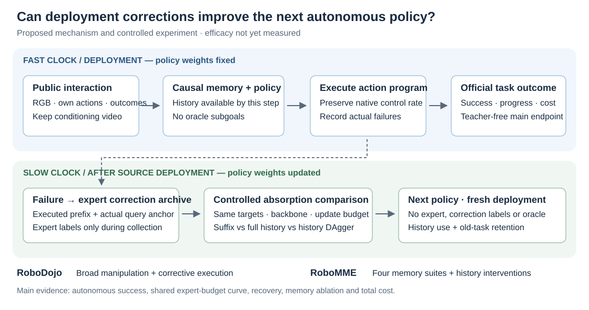
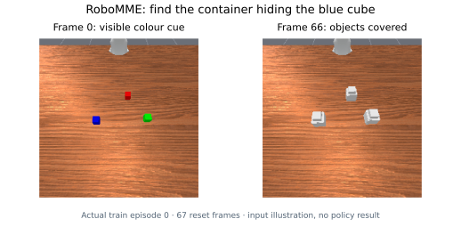
第一项受控实验：相同初始模型、纠正目标与更新次数，比较纠正后缀、完整失败—纠正历史及完整历史 DAgger。与额外 BC/SFT 比较时另报告完整采集/专家/计算成本。如果 DAgger 追平，就归因为历史条件的状态覆盖，不把它改名为新机制。
主流指标：完整任务自主成功率、共同专家预算 0/1/2/5 下的成功曲线、专家执行比例、恢复率、旧任务保持。广泛实验的种子数待后续冻结；当前两任务吸收试验已登记六个配对训练种子。有效/清空/打乱历史的扩展对照仍未运行。官方测试切分不参与环境调试和方案选择。
基线代码：RoboMME 官方 pi0.5、FrameSamp+Modul、RMT/TTT 与记忆方法；RoboDojo 的 XPolicyLab / StarVLA 集成。代码已定位不等于复现完成。LIBERO 的 7D checkpoint 不能直接作为 RoboDojo 的 14D 双臂基线。
已实际执行机器人策略：官方发布的 FrameSamp+Modul 模型在四个预登记训练实例完成闭环，共 1,070 个控制步、69 次动作块预测、1,188 帧公开观测；逐文件及逐动作审计通过。零梯度更新，无教师动作前缀。这是执行验证，不能把四个训练实例当作完整基准成绩或方法收益。
| 训练任务 / episode 0 | 官方结局 | 控制步 |
|---|---|---|
| PickXtimes | 成功 | 512 |
| VideoUnmask | 成功 | 178 |
| PickHighlight | 成功 | 312 |
| PatternLock | 失败，保留 | 68 |

完整标准验证已启动并续跑：16 个任务 × 50 个 val episode，共 800 例；固定模型与参数、保留全部成败，不报告未完成全套的成功率。官方 test 未触碰，新的完整预算训练已单独启动，六种子吸收结论尚未生成，首个单种子负结果见上表。此前已审计快照为 109/800，已完成的 BinFill 为 22/50（44%）、StopCube 为 20/50（40%）；其余任务未完成，不合成全套成绩。这里是带时间戳的快照，非实时监控。
RoboDojo 已加载原生场景：固定 stack_bowls / eval seed 0 / layout 0 在 RTX 5090、固定 IsaacLab/CuRobo 源码下完成重置与相机预热，三路原始 RGB 如下。未替换材质或机器人参数；发布资产的外部材质警告保留。尚未执行学习策略控制，不能当作任务成功。原生重置记录 →
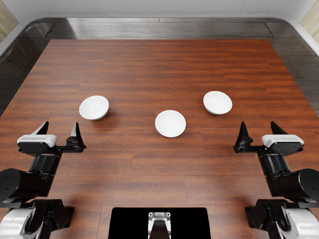
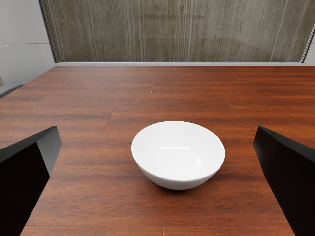
原生优化已实际完成：完整历史与近期历史在双 A100 80GB 上各完成 8 次更新，使用官方 34.42 亿参数模型、原生 AdamW / warmup / EMA；两臂初始权重相同，保存与重载的 EMA 摘要一致。预热后更新中位耗时约 0.164 秒。这是训练通路资格核查，尚不是学习收益。8 次更新远不足以评价吸收效果。两臂核验记录 →
前瞻采集已完成 16/16 个训练侧实例：8 个 source、8 个 development，只有 source 进入监督。所有成败均保留；是否曾进入发布模型的预训练未知，不能声称是新规则泛化。原计划只覆盖前 64 步，审计发现仅有 33/124 个实际决策位置获得完整标签；已事先登记补充后半段的 88 次查询。
现共闭合 124 次学生状态专家查询：26,450 帧前缀检查全部逐位相同，得到 120 个完整动作块 / 每种历史视图。3 个终局部分块和 1 次规划失败保留成本、排除训练，不补齐、不挑选重跑。PatternLock 与 PickHighlight 的决策位置覆盖率分别为 87.0% 与 99.0%；实际额外专家控制 2,456 步、学生前缀重放 23,568 步。该覆盖是数据资格核查，不是效果指标。
已登记的配对试验（中止后按原计划恢复）：6 个训练种子 × 2 种历史视图，每个固定 10,000 次原生更新，均从逐参数核验的原始发布模型开始。两种视图分别对因果历史均匀采样至多 32 帧或取最近 32 帧；这是同预算的历史跨度对照，当前输入和纠正目标相同。2 个初始参照 + 12 个训练后模型，各评测两任务 100 个官方 val 实例；所有种子必须报告，test 不参与。先比较吸收前后成功率，再比较两种历史的吸收增量差，避免把初始历史优势当成学习收益。固定方案、统计规则与否定条件 →
六个种子、两种视图共12个模型完成训练：每模型10,000次更新，12份精确推理导出已持久保全。full seed7的匹配对照为42/100→14/100；recent seed7为12/100→6/100，两个baseline分别保留。2026-10-18T01:07:27.905173+00:00只读核验（此时新增rawguard已完成）：原队列监督进程已退出，旧RUNNING文件过期；当前持久核验458/1400（4个完整单元、full seed17部分58例）。新增1条为任务失败，84个关联原件已通过冻结校验器核验；没有重跑。最新worker退出1导致batch排空验收拒绝，服务退出等待亦超时；随后本机GPU状态查询20秒超时，根因UNKNOWN。历史中止和所有任务失败保留，六种子结论未生成。此为有日期的快照，不是实时状态。覆盖、批次顺序与恢复身份 →
历史输入资格检查（2026-10-17T14:47:16Z）：6条成功源轨迹中的71个20步动作块已核验；当时两个固定source锚点检查发现，缓存训练与在线服务的历史图像特征数值不同，其余10个输入字段逐字节一致。该零更新诊断的全部数组与摘要已独立复核；“0次更新”仅描述这个历史诊断阶段，不代表后续训练状态。它不是新成功率，也尚不能解释42→14；后续配方须单独报告，不能将接口修复混入replay收益。输入差异与身份 → · 代码PR #12（未合并）→
已保存的PH public frame112实验，用同一图像组成1/8/16帧encoder批次，分别复现尾批1、旧cache8和live16的特征。这是该输入的batch-shape数值来源证据，不是42%→14%任务退化的因果证明。原FAILED字节比较不改写为PASS，也没有拟合allclose容差或修复输入路径。
独立CPU审计入口区分三项：源文件/帧/索引/真实20步目标/学生字段严格一致；相同packet与模型/RNG的复现；不同已登记packet的数值profile。资格澄清仅面向后续入口，不追溯放行已完成pilot；此前训练依据其事前Addendum001，当前10,000次更新与2/8负结果保留。资格与CPU合同PR #19（未合并）→
| 保存预测的前16个时间步 | 七关节MAE（rad） | 七关节最大差（rad） | 第8通道最大差 |
|---|---|---|---|
| PatternLock | 0.000102835 | 0.000795129 | 0.002196827 · stick包装器忽略 |
| PickHighlight | 0.000090840 | 0.000795129 | 0.002440800 · 独立gripper命令单位 |
这些是读取已有6份数组的预测敏感性，不是新执行轨迹或对专家标签的误差；未执行的尾4步不参与，关节与gripper不合并单位。dtype-only在这两个released-model输入上预测逐字节相同，不能外推到训练后的full7。71个replay块有1,420个目标出现、1,160个不同的实际控制，重复出现是权重，不是独立数据。
原生padding在1/31个有效帧时，image/position/state主机数组升为float64，当前JAX CPU与HistAugObservation入口为float32；32帧时image保持bf16，原缓存writer将其无损表示为float32，live路径仍为bf16。有效token数分别为16/496/512，帧序、mask、补零与声明的存储格式roundtrip已检查。没有统一强转bf16、修改padding或旧120份张量。这是合成数组的组件合同，不是早期prefix任务表现、GPU等价或学习收益。新增模型/encoder/环境/优化器调用均为0。
完整初始对照已完成：未吸收这批纠正的原始 FrameSamp+Modul 在本次两任务官方 val 对照中完成 100/100 例：PatternLock 32/50（64%），PickHighlight 10/50（20%），任务均分 42%。保留原生初始演示/视频，此后不额外求助。这是固定 checkpoint / 推理 seed 的初始成绩，不能视为我们的学习效果或完整 16 任务成绩。100 例完整摘要 →
要检验的假设：相同纠正、骨干、更新预算与记忆 token 数下，保留完整因果历史是否改善下一轮自主成功率，并降低额外专家预算？当前完整历史候选就是完整历史 BC / 一轮 DAgger，只训练一次，不包装成独立新方法。六种子的当前试验只检验零追加专家下的吸收，尚不覆盖整条专家预算曲线。RoboMME 原生提供初始演示/视频条件，“自主”指之后不再追加专家接管。本轮实际结果与边界 → · 查询成本与覆盖 →
RoboDojo 14D 权重已校验：匹配 ARX 双臂的发布权重已通过原生 strict=True 完整加载。实际三路 RGB / 本体状态输入得到两次完全相同的 (1,50,14) 动作预测，原生 14D forecast 资格核查通过；尚未执行这些动作，闭环成功率仍为 NOT_RUN。此前共享显存不足的中止保留。预测资格核查 →
PatternLock 训练 episode 0：原学生第 68 步失败。重放前 64 个控制步，113 帧策略可见的 RGB 与状态逐帧相同；专家从该状态接管，额外 26 步完成任务。专家从初始状态运行也成功，用 42 步。接管点是看到失败后选定的训练诊断，不是自动求助触发器或方法成功率。
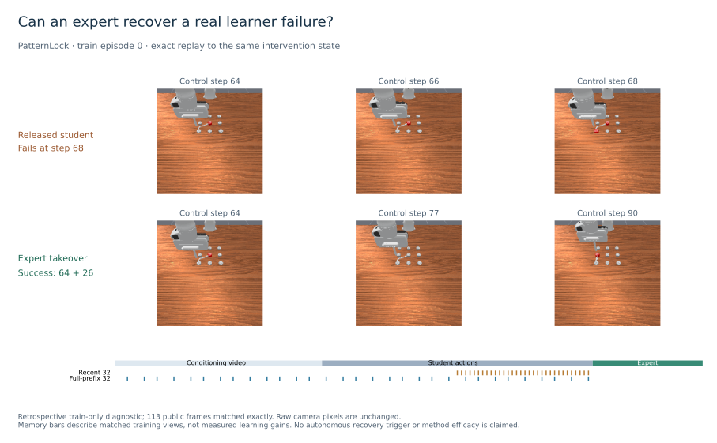
验证集当前快照：已审计 109 / 800 例；Vulkan 环境创建中止与网络心跳中止均保留，当前按原顺序在独立仿真进程中续跑，不重跑已完成的任务失败。完整成功率仍不报告。恢复结果、成本与限制 → · 结构化结果 →
LIBERO-10 长程任务，固定的已发布 QwenOFT checkpoint；10 个任务 × 50 个标准初始状态。全部覆盖，无缺失或中止；这是基线，方法效果尚未运行。
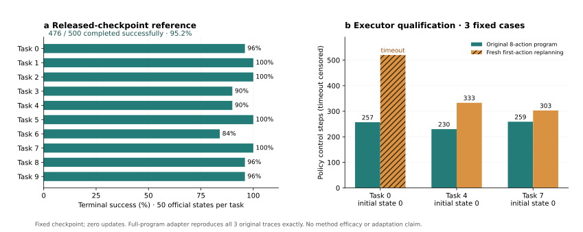
纠正接口的负结果：同一专家每次执行完整 8 步动作块时成功，改为每个控制步重新预测、只执行第一动作后，task 0 在 520 步超时。完整动作块接口再核对 3 / 3 精确一致。这是执行周期检查，不能当作 DAgger 的一般失败或我们的创新性证据。
归档代码没有 Git 元数据，使用内容摘要绑定；checkpoint 发布时的原始源码 revision 尚不可核验。因此这轮是归档集成栈上的固定 checkpoint 复现。标准 LIBERO 成功率本身不能证明 ICL。失败轨迹完整保留，但不能训练后再用相同案例作确认性评测。
| 学习阶段 | 机制与比较 | 必须测到什么 |
|---|---|---|
| 部署后吸收 | 同预算 BC/SFT、实际学生状态 DAgger/OPD、恢复后缀、历史条件纠正 | 下一代无教师成功率、恢复率、旧技能保持 |
| 部署中适应 | 冻结慢权重；有效自身历史、空历史、打乱反馈；新 query 起点 | 绝对尝试 1/2/3/5 成功率、预算内累计成功、专家控制比例 |
| 跨代闭环 | 固定数据、普通 OPD、更新经验生产器；第 0–3 代 | 收益能否跨代保留；所有采集、标注、更新与评测成本 |
已实现动作块标注与采集接口：专家在学生实际访问的块起点重新预测，未来动作绑定该起点输入；恢复接管按整块执行，失败动作保留为上下文。训练变换已用上游代码核对 129,304 条动作及 24 对首帧图像。另一次新源状态上的有界训练检查见下；学生失败纠正、多种子吸收和适应模型仍待完成。正式的 PLD、RECAP、RoboTTT 复现与这些数据使用对照分开登记。
已运行的工程验证，不是方法效果实验。只采集源切分；开发与查询状态未评测。
本轮共 644 个显式仿真步（含源采集、稳定前缀与恢复检查），66 次专家模型查询。训练使用真实双相机图像与上游 forward/loss，未用小模型替代。8 次 loss 均有限，但来自不同批次且不单调下降；不把它写成性能改进。
正式实验前的科学条件：相同确定性 checkpoint 自我标注，大多是相同目标，不能回答“专家纠正如何增加能力”。下一步先建立有意义的学生—专家能力差异，并验证专家能恢复学生实际失败，再做同预算 BC/SFT、学生状态 OPD 与恢复比较。当前模型只读当前双相机，不是历史条件适应模型。
已找到可用于构建普通 BC 学生的示范数据候选：LIBERO-10 元数据有 379 条 episode、101,469 帧。其任务编号与环境编号不同，已按指令核对映射；视频、动作时序与完整来源身份仍待审计。数据候选与任务映射 →
更新、摘要与完整 loss 记录 → · 源、采样与 checkpoint 审计 → · 结果与成本说明 → · 下一阶段实验草案（未冻结） →
同一学习器与实际学生历史，比较不同经验信用。短信用诊断已运行并未通过；完整共同演化闭环尚未运行。
学生真实执行，保留动作、后果、反馈、失败和恢复；配方选择器决定采什么任务、分配多少交互。
所有臂共用信息与标签接口从同一学生权重分叉，做相同短训练。在训练侧的新规则上冻结权重，测量适应效率的变化。
反馈池属于训练，不是 test信用更新生产器，经验形成下一代。分别记录已有能力、首次表现、新规则适应曲线和总成本。
短分支、被拒经验与评测均计成本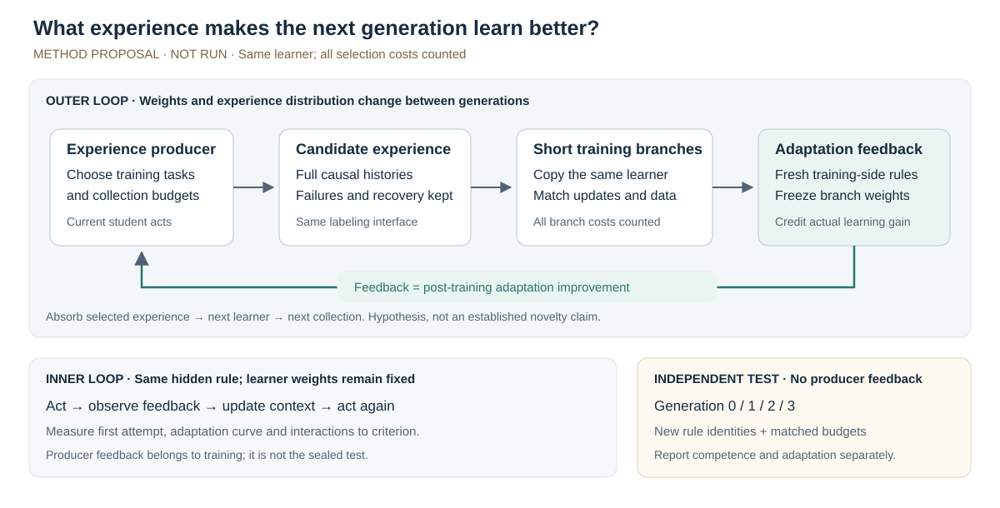
普通成功或训练进展闭环可能改善当前能力，却没有同等改善新规则适应效率。适应信用是否改变这一点，必须超过 DAgger、元课程与 SOAR 式进展的强对照。
Qadapt(θ) = E[Σb>0 wb(Rθ(τ,b) − Rθ(τ,0))]；候选经验的信用为相同短训练后的 ΔQadapt。同时保持整体表现与首次表现，防止靠降低首次表现制造提升空间。
CARML 已让任务分布与元学习器共同演化；SOAR 已用实际短训练后的收益奖励生成器；Meta-Teaching 与通用 TSCL 高度接近。改变反馈目标不是新颖性的充分证据。
先检验短信用能否预测较长吸收后的适应收益，再扩大为四代闭环、跨域与机器人实验。完整机制、否证条件与实验矩阵 →
26 篇标识已核验；下方选列 16 项直接先例。预印本与已发表论文分别标注。
没有匹配条目。
26 篇的完整条目与逐篇阅读深度 → · 本轮创新性审计 →
43 条代表文献索引，14 行比较；摘要级与方法级阅读区分。Meta-Teaching 完整 PDF 当前不可获取，保留高度重合的待核标注。
| 直接路线 | 已经解决什么 | 本方案必须多证明什么 |
|---|---|---|
| AD / DPT / CEC | 吸收交互与跨 episode 学习过程 | 经验生产反馈带来的跨代收益 |
| CARML / Meta-Teaching | 元学习器与任务课程共同适应 | 具体信用机制超过已有元课程 |
| SOAR / cooperative TSCL | 训练后的目标增量给经验信用 | 固定权重新规则适应增量的独立价值 |
| LMPC / RL²F | 改善从反馈中学习的能力 | 持续生产这种学习经验的效果与总成本 |
机制、分类与实验—结论表 → · 完整特点 CSV → · 43 条来源与阅读范围 → · 12 项新标识核验 →
沿用现有实现检验信用；有限映射族已反复使用，不能充当全新确认集。
区分对任务有用的规则和无关干扰；官方域已核对，训练未运行。
新的化学规则与因果结构、多 trial 推断；原版环境与 E0 已运行，差异门未通过；学习器训练未运行。
不同 worker 的行为与失误规律；公开符号任务已核对，训练未运行。
同一学习器下比较 uniform / task success / information / learning progress / SOAR-style / meta-teaching / adaptation credit；正式 AD、DPT、DREAM 与元课程方法复现另做，不用自写 BC 代替。短信用诊断已有负结果，完整闭环尚未运行。
原版 Symbolic Alchemy，8 套不同化学规则 × 4 个手工参考 × 10 个 trial。同一规则下物体改变；各臂共享相同物体与动作预算。
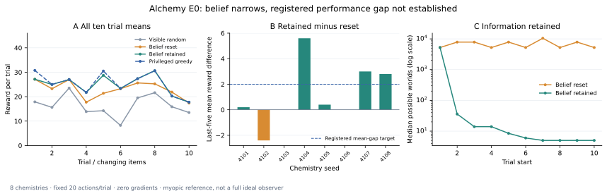
| 策略 | 十 trial 平均 | 后五 trial 平均 | 首次 trial |
|---|
| 规则 seed | 保留 − 清空，后五 trial |
|---|
非特权策略只接收 production symbolic_obs、自己的动作和当前 trial 内动作索引；不接收环境、tracker、规则 seed 或真值。官方信念更新由可见观测独立重建；单步评分由我们实现，不能称完整 IdealObserverBot 复现。
trial 边界已切换到新物体时，不用内部状态补出旧物体的结果。六项测试包含可见后验与官方 tracker 对照，源码与生成绑定的身份均登记。
保留信念与特权贪心的后五 trial 回报在 8/8 套规则上相同。特权贪心不是最优 oracle 或天花板，完整信念空间规划未测试。因此只记录“当前贪心决策未建立足够差异”，不推断 Alchemy 没有学习空间。
全部结果与局限 → · 运行前协议 → · 安装、原始源码身份与复现 → · 固定分析 JSON → · 独立重放 → · 矢量图 PDF →
三个新训练种子，每种子八个固定候选。短分支 64 次、长分支 300 次更新，均从同一初始权重和 Adam 状态重新开始。
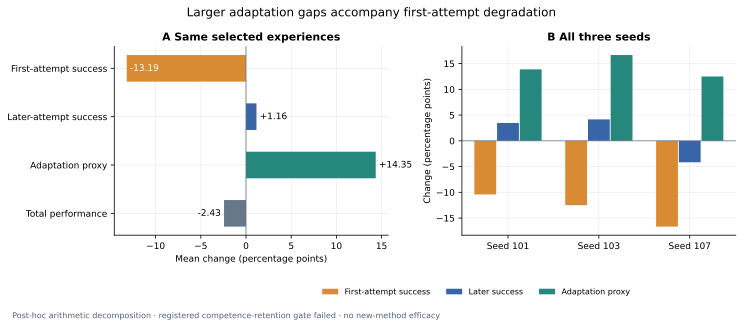
| 量 | 训练前 | 较长吸收后 | 变化 |
|---|
目标为较长训练后的适应代理增量。均值只描述三个优化器种子，不是统计显著性结论，也不是 SOAR / Meta-Teaching 方法复现。
| 候选评分 | 平均 Spearman | 选中候选的代理增量 |
|---|
均匀参考是通过短反馈守卫的候选中随机选一个的期望，不是把全部数据合并训练。
| 训练种子 | 选中批次 | 排序相关 | 首次变化 | 后续变化 | 长审计守卫 |
|---|
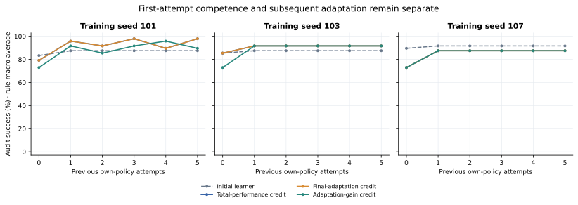
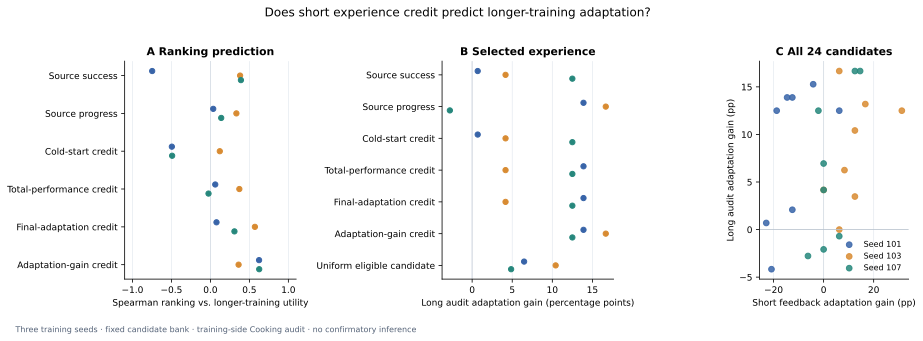
守卫已在短训练的反馈规则 → 审计规则迁移中失败，不仅是短训练 → 长训练的问题。尚未定位是规则层次、目标覆盖或标签密度导致；不在这份面板上重调门。初始模型的首次表现已较高，后续学习空间有限。
回放全部动作、标签和策略输出，绑定 51 个 checkpoint，另复训一个固定短分支；没有重复全部 51 次训练，也不是物理快照 E4。软件核验通过与科学假设失败分别记录。
完整结果与否证条件 → · 运行前协议 → · 复现说明 → · 固定分析 JSON → · 代理分解 JSON → · 主诊断图 PDF →
四臂 × 三个种子，从同一动作基线 checkpoint 出发。两轮采集与学习，固定 600 次额外更新；这是 DAgger 式强对照。
| 采集 × 目标 | 平均成功率 | 种子 7 / 19 / 41 | 清空记忆后 | 新增采集动作 |
|---|
相同序列数和更新步数不等于相同 token 或环境动作预算。复用原有诊断面板和种子，三种子的结论是描述性结果。
独立结果图：SVG · PDF · 全部差值与预算 · 复现
上一轮所有执行失败都伴随不可逆碗污染；真实历史在执行开始时已经包含所需食材。事实辅助的三个事实完全正确时，动作与符号参考相容也只有 64.38%，不能把执行错误全归因于缺少任务推断。
动作标签的弃权规则对四臂的全部新旧训练历史相同；本轮没有单独测量它的效果。完整观察帧与事实目标保留。学生训练池会随策略变化，因此交叉效应是采集与学习的系统效应，不是孤立的辅助损失因果估计。
3 个优化器种子 × 3 个训练臂。循环行为克隆，固定最终 checkpoint；不是 DREAM / AD 复现或 OPD。
成功率取五次尝试的均值；种子间波动在下表完整报告。第 1 次执行之前已有 20 步交互探索，不是零样本。符号完整历史参考仍为 100%，没有参与梯度训练。
| 训练臂 | 平均成功率 | 三个种子 | 第 1 → 5 次 | 清空记忆后 |
|---|
冻结九个模型，提供同一段真实 20 步探索前缀，再仅遮蔽其中的食材反馈。执行期仍读原始观测，没有梯度更新。外部提供前缀的检查与上方自主执行结果分开。
| 模型 | 真实前缀 | 遮蔽食材反馈 | 真实 − 遮蔽 |
|---|
事实辅助的第 1 → 5 次仅增加 2.67 个百分点。现有证据主要支持“更会利用已获得的信息”，没有证明更好的主动探索、持续自我改进或 OPD。
结果图：SVG · PDF · 完整分析 · ICML 双栏初步研究稿（未投稿）
第一轮在核验器设计时发现缺少终局反馈输入，已中止并标 INVALID。修复补上真实终局观测与奖励，不新增环境动作；任务、期限、切分、种子和更新预算不变。
这一上一轮实验使用统一的教师与固定动作扰动历史，是离线行为克隆；新的学生历史交叉实验见上方。后续信用诊断见上方；DREAM / AD 强方法复现和机器人任务仍未运行。24 个映射复用前一轮诊断切分，是探索性 pilot，不是独立主实验。
原版环境，新的显式诊断协议。手工策略；不是原作者方法成绩复现。
| 对照 | 成功 / 执行 | 平均步数 | 第一次 → 第五次 |
|---|
探索未完成菜谱，但保留其观测降低后续动作成本。把探索成本算入五次执行，总预算也分别报告。
两种记忆实现同一充分事实策略。没有成功率提升，没有神经权重更新，也没有机器人结果。
第一轮有上下方向适配错误，已标 INVALID 并保留；修复仅改适配代码，未改环境、horizon、切分或预算。这里仅展示第二轮。
五种搜索 seed 不是模型训练 seed。重复目标执行不作为独立泛化样本。置信区间按 24 个隐藏映射重采样，只描述这组条件，不是新方法优越性检验。
Cooking 代理信用与 Alchemy E0 差异门均未通过；新信用训练、多代共同演化与机器人效能仍未运行。
学生状态覆盖后，动作基线超过事实辅助；保留普通 DAgger 式解释。
预测代理有用，不保证选出的经验有用。能力保持登记门失败。
在新规则族测达到同一标准所需的交互，跨规则验证能力保持；不事后重调当前评分。
E0 已运行但差异不足。下一步先登记有搜索预算的规划校准，比较已知化学的精确规划和官方完整信念规划，再决定学习试验。
闭环、学习进展、吸收学习历史均已有直接先例。当前仅得到一个评分与选择的失败边界，尚未确立新颖、有效的跨代方法。正式强方法复现与跨域证据仍待完成。